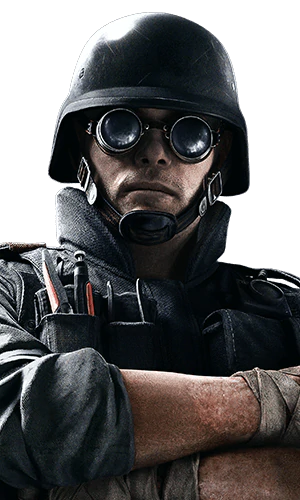

| Játékmenet | Védők | Kezdőlap |
A Rainbow Six Siege-ben ugyanolyan sokat leszel támadó mint védő, igy nem árt őket ismerni, főleg mert a játék jelenlegi állása szerint sokkal nehezebb dolguk van mint a védekezőknek. Általában erősebb és nagyobb hatótávú fegyvereik vannak, valamint képesek kötelekkel megmászni az épületek külső falait. A legjobb barátjuk a drónok. Ezek kis, távirányítású kamerák amikel felderíthetik maguk előtt a területet. Ebből 2 van nekik, és az elsővel a felkészülési időben kell megkeresniük a védőket és a célpontot a épületen belül.
Talán a legfontosabb része a támadó csapatnak. Ők képesek kinyitni reinforce-olt falakat, ezzel sebezhetővé téve a védők pozicióját.
| Thermite | Hibana | Maverick | Ace |
|---|---|---|---|
|  |
|
|
|
Olyan operátok akik erős fegyverrel rendelkeznek, vagy másmilyen okból hatékonyak a védők eliminálásában.
| Ash | IQ | Capitao | Amaru |
|---|---|---|---|

|

|

|

|
Ezen a két fontos szerepen kívűl ugye vannak támadók, akik kicsit máshogy állnak neki a problémának.